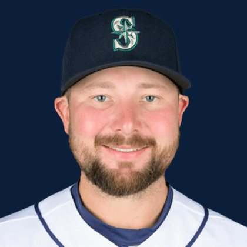

BASEBALLKEEP
Dynasty · Redraft · Diamond
Player File · C SEA

Cal Raleigh
#29 · C · Seattle Mariners · age 29 · B/T SR · 6' 2" / 235 lbs · MLB debut 2021 · Harrisonburg, USA
Keep avg81.71
# Boards21
BK Value1,481
Spread22–140
Hitting
| Year | G | AB | R | H | 2B | HR | RBI | SB | BB | SO | AVG | OBP | SLG | OPS |
|---|---|---|---|---|---|---|---|---|---|---|---|---|---|---|
| 2026 | 93 | 334 | 27 | 52 | 8 | 13 | 44 | 2 | 51 | 125 | .156 | .271 | .296 | .567 |
| 2025 | 159 | 596 | 110 | 147 | 24 | 60 | 125 | 14 | 97 | 188 | .247 | .359 | .589 | .948 |
The Keep#80BK 1,481
The Lineup#62BK 2,087
Redraft#80BK 1,481
Minus
- Board spread 22–140 (118 ranks).
Every Board
Spread 22–140 · 21 sources
| Source | Rank |
|---|---|
| FantasyPros Dynasty ECR | 22 |
| TDG Points | 46 |
| Dynasty League Baseball | 69 |
| Four-Seam Fantasy | 73 |
| Fantasy Baseballers | 77 |
| RotoWire | 80 |
| FanGraphs The Board | 80 |
| Ottoneu | 83 |
| ESPN | 84 |
| NFBC ADP | 84 |
| Mastersball | 84 |
| ATC ROS | 84 |
| Razzball | 85 |
| Baseball Prospectus | 85 |
| The Dynasty Dugout | 85 |
| Baseball America | 85 |
| Enos Slaughter | 85 |
| Pitcher List | 92 |
| CBS Sports | 95 |
| The Athletic | 98 |
| RotoGraphs Model | 140 |
BK News
On The Keep nearby — Michael Busch (#78) · Seiya Suzuki (#79) · Randy Arozarena (#81) · Jacob Wilson (#82)
All players · The Keep · BK News · The Lineup · Pitchers · Calculator